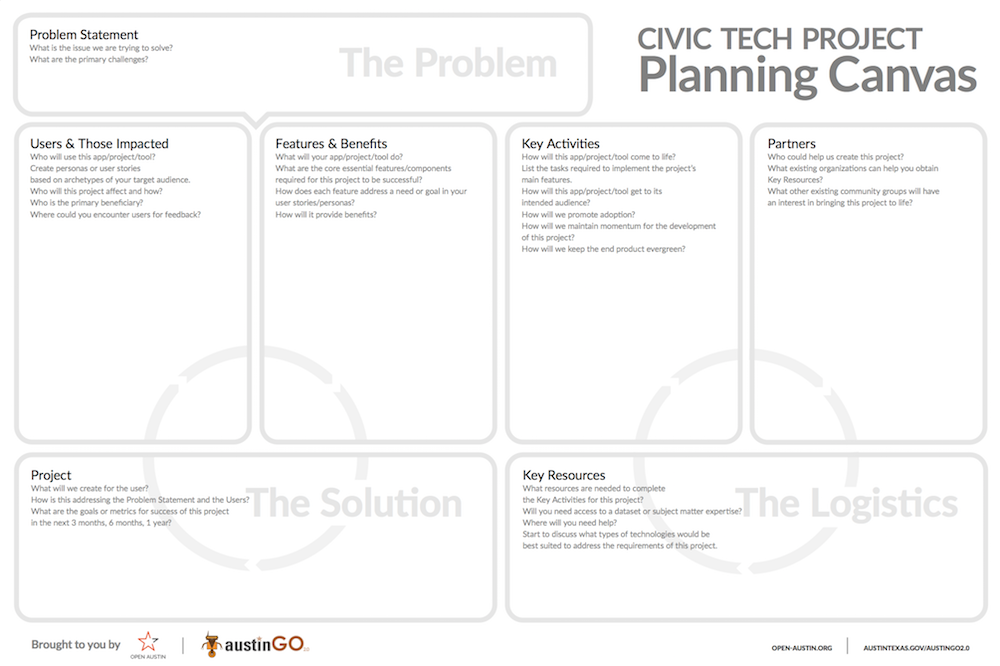
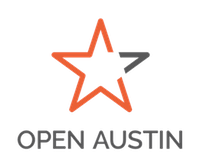
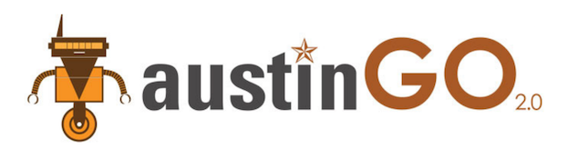
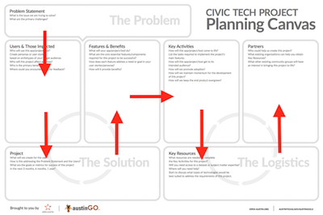

Civic Tech Canvas
A project planning canvas inspired by the "Business Model Canvas" but designed for Civic Tech projects.
Brought to you by
 Download
To download the canvas in PDF format, click here.
To download the canvas in Adobe Illustrator file format, click here. The accompanying font files can be found here.
Using the Canvas
Flow:
Main flow of the canvas will be as follows. However, this is intended to be an organic process with fluid thoughts and does not have to follow this route: Sections:
The canvas is broken down into 3 main sections: The Problem, The Solution, and The Logistics.
THE PROBLEM:
The Problem Statement is the reason you are planning a project. It can be framed as a "How might we... so that... ?" statement. It is at the top because it is crucial to keep the problem you a trying to solve as the anchor for the rest of the sections in the Civic Tech Canvas.
THE SOLUTION:
First, the focus is on ‘who’: Users & Those Impacted (Customer Segments). In this box, participants will not only discuss the direct users of the projects they are building out, but also the people in the community their project will impact. Secondly, participants will describe the Project (Channels) itself. They will discuss what kind of tool they will design and build as well as how it is going to address the Problem Statement. Lastly, they will list out of the Features & Benefits (Value Proposition) of the project: What will the project do?
THE LOGISTICS:
The final section focuses on Logistics: How will this project be completed? First, participants will list out all of the Key Activities they need to do to turn their project idea into reality. Secondly, they will figure out the Key Resources they for the Key Activities to complete the project. Lastly, they will brainstorm on the Partners (Key Partners) they need to work with to do the complete the project.
Credits
Designed by Diego Hernandez & Vanessa Sanchez
Supported by Charles Purma & Mateo Clarke